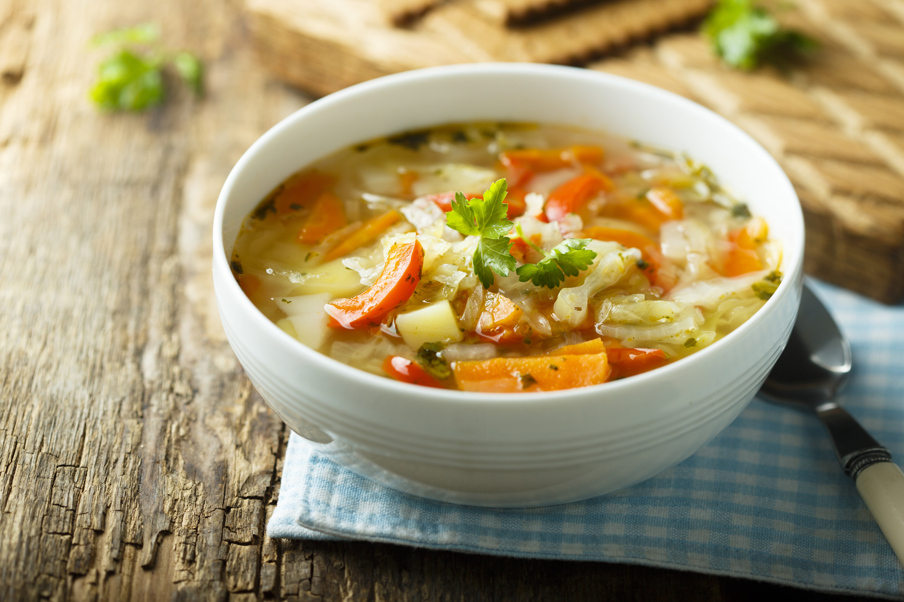

Bolo de Carne

1 kg de alcatra média(s)
1/2 xícara (chá) de cheiro-verde picado(s)
2 colheres (sopa) de maionese
Sal a gosto
Azeite a gosto
1 unidade de ovo
1/2 xícara (chá) de farinha de rosca
1/2 xícara (chá) de cebola picada(s)
Recheio
300 gr de mussarela picada
200 gr de presunto magro picado
1/2 xícara (chá) de cenoura ralada(s)
1/2 xícara (chá) de azeitona verde picada(s)
Sopa de Legumes
1 colher (sopa) de óleo
1 cebola pequena picada
1 cenoura cenoura média cortado em cubos pequenos
1 batata média cortado em cubos pequenos
1500 mililitros de água
2 Cubos de Caldo Knorr Legumesknorr Logo
200 gramas de abóbora pescoço cortado em cubos pequenos
1/2 xícara de chá de vagem picada
1/2 xícara de chá de macarrão Knorr Padre Nossoknorr Logo
1 colher de chá de sal
Lasanha

500 g de massa de lasanha
500 g de carne moída
2 caixas de creme de leite
3 colheres de manteiga
3 colheres de farinha de trigo
500 g de presunto
500 g de mussarela
sal a gosto
2 copos de leite
1 cebola ralada
3 colheres de óleo
1 caixa de molho de tomate
3 dentes de alho amassados
1 pacote de queijo ralado